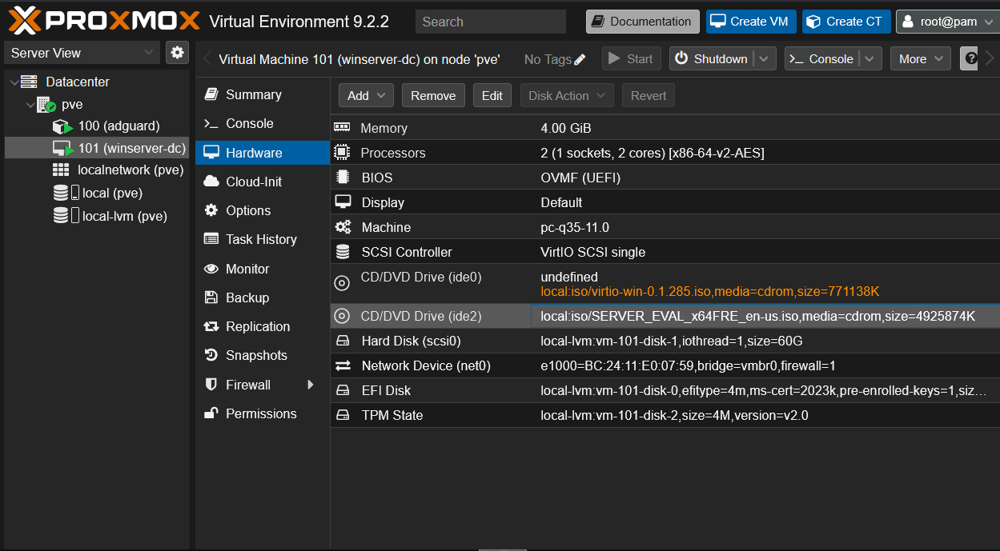
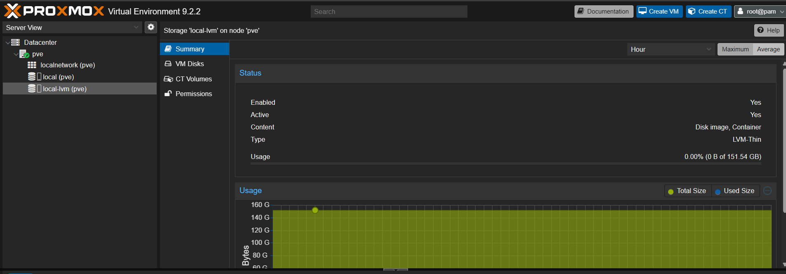
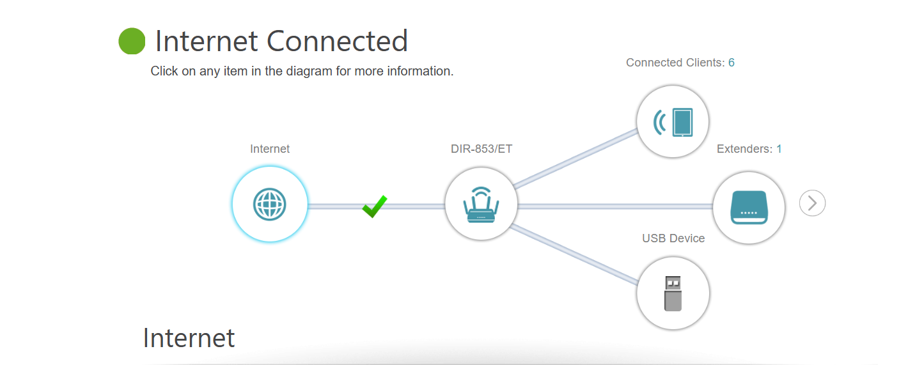
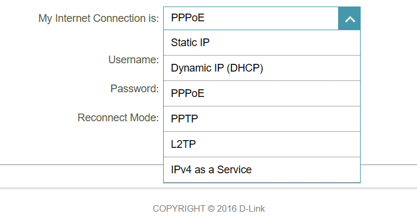
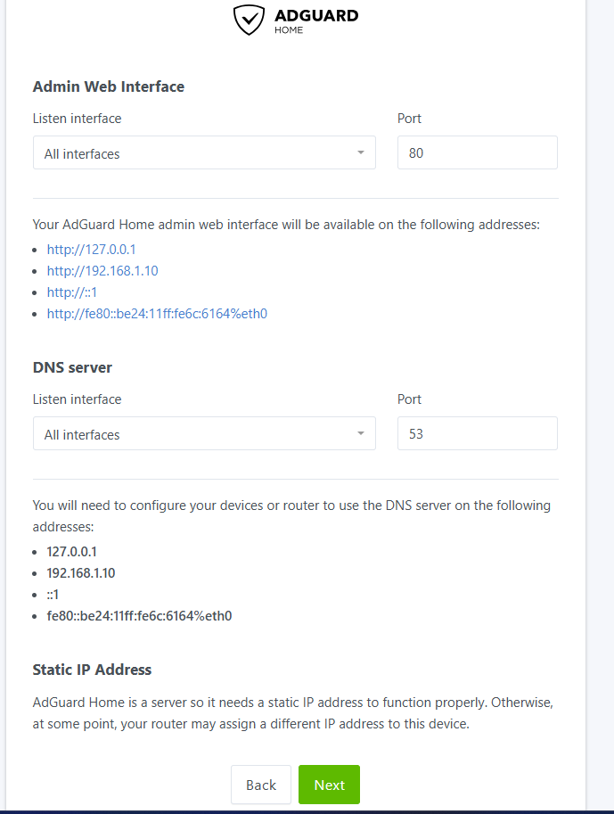

Self-Hosted Home Lab Infrastructure
Personal Project · 2026
- Context
- Personal infrastructure project · 2026
- Project status
- Deployed lab
- Tools & methods
- Proxmox VE · Linux · Windows Server · Docker

The build
- Built a virtualization platform from bare metal using Proxmox VE on repurposed hardware, provisioning and managing multiple LXC containers and QEMU/KVM virtual machines.
- Designed a segmented network using a secondary consumer router in NAT/router mode, separating lab addressing from the primary home network while preserving internet access.
- Deployed Windows Server 2022 as an AD DS domain controller with integrated DNS; configured the forest/domain, NetBIOS naming, and DSRM recovery.
- Implemented DNS-based ad and tracker blocking with AdGuard Home and custom DNS rewrites for internal service resolution.
- Configured Nginx Proxy Manager with an OpenSSL self-signed wildcard TLS certificate trusted at the OS level for internal HTTPS.
- Deployed Vaultwarden, Nextcloud, and Uptime Kuma using Docker Compose.
- Diagnosed DNS resolution failures, IP subnet conflicts, VLAN misconfigurations, and certificate trust-chain errors.
- Documented the build process and architecture decisions for future reference and knowledge transfer.
Network boundary
The secondary NAT router separates the lab subnet. Complete isolation from the primary network also depends on routing and firewall rules; NAT alone does not guarantee it.
Skills & tools
Proxmox VE · Active Directory / AD DS · DNS · Docker / Docker Compose · Reverse Proxy (NPM) · TLS/SSL Certificate Management · Network Segmentation · Linux (Debian) · Windows Server · Self-Hosted Services
Hybrid management
The lab also includes Azure Arc integration alongside the local virtualization and container services.
Inside the lab
Original screenshots from the build: virtualization, router configuration, and DNS services.

More lab screenshots +



